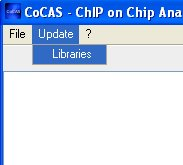

Cocas - ChIP On Chip Analysis Suite Online Help
5. Changes from previous versions
1. Introduction
CoCAS is a standalone Chromatin immunoprecipitation microarray (ChIP-on-chip) analysis application. It has been designed to be used primarily on Agilent microarrays, be they scanned using an Agilent scanner or with a GenePix scanner. CoCAS is free software and builds upon existing packages in Java and R programming languages, notably BioConductor. CoCAS uses Java for user graphical interface, and R for the bulk of the calculations.
2. Requirements
CoCAS requires at least 1 Gb RAM and a 2GHz Intel Pentium 4 or equivalent for comfortable use. We recommend at least 1 Gb of free hard disk space for swapping. CoCAS runs under any 32-bit or 64-bit version of Microsoft Windows. NOTE THAT CoCAS REQUIRES R VERSION 2.5.x/2.6.x TO BE INSTALLED ON YOUR SYSTEM (THERE ARE COMPATIBILITY ISSUES WITH R 2.7.x, WE ARE CURRENTLY WORKING ON THEM) AS WELL AS JAVA 1.5. JAVA 1.6 IS RECOMMENDED.
CoCAS can be readily started by double clicking on the CoCAS_2.4.jar icon. Alternatively, CoCAS may be run from the command line with specific parameters, for example, in order to assign more memory to CoCAS, one would type java -Xmx2048m -jar [path to CoCAS]/CoCAS_2.4.jar . A welcome screen will prompt you to use the express wizard, which is an easy step by step guide.
Upon first use, you should click "No" so that you can check that you have all the required libraries. You can do this by clicking on the "Libraries" menu item from the "Update" menu.

CoCAS will then check and download libraries where appropriate. This process can be quite lengthy.
4. Using CoCAS
CoCAS features a simple wizard that can help you design your analysis. There are eight steps which provide detailed help. The first step is to define an analysis name. Then comes file loading which is explained in the next section.
Files can be loaded three ways in CoCAS. One way is to use the step-by-step guided wizard, or from the main window, either by right clicking on the File Panel, or by using the File Menu. In the classic mode, once you have loaded files, the main panel, which was greyed out, becomes accessible. CoCAS allows you to enter all replicas of a same experiment under one slide. For example, if you have two replicas of one experiment, 252040810001 and 252040810002, you will enter them under slide 1 for example
3. Dye Swap
Dye-swap normally sets Cy3 to the IP channel and Cy5 to the Input channel.
4. Intra-array normalization parameters
You can here choose from four normalization methods :
Median normalization assumes that the red and green intensities are related by a constant factor, i.e. R = kG, and the center of the distribution of log ratios is shifted to zero
log2R/G -> log2R/G – c = log2R/(kG)
where c = log2k is the median.
Lowess (Locally weighted scatter plot smoothing) intensity-dependent normalization performs a fit of the data by subtracting a linear regression curve.
log2R/G -> log2R/G – c(A) = log2R/[k(A)G]
where c(A) is the lowess fit to the MA-plot.The Variance Stabilisation Normalisation (V.S.N.) method builds upon the fact that the variance of microarray data depends on the signal intensity and that a transformation can be found after which the variance is approximately constant. See Huber W, von Heydebreck A, Sültmann H, Poustka A, Vingron M. Variance stabilization applied to microarray data calibration and to the quantification of differential expression. Bioinformatics. 2002;18 Suppl 1:S96-104. for details
Peng et al. normalization uses signal enrichment rotation against intensity according to an angle estimated by PCA, then applies a weighted loess normalization. See Peng S, Alekseyenko AA, Larschan E, Kuroda MI, Park PJ. Normalization and experimental design for ChIP-chip data. BMC Bioinformatics. 2007 Jun 25;8:219. for details
High density microarray designs can sometimes be spread over more than one slide, i.e. in the case of whole genome experiments.
This option causes all slides entered as one experiment to be treated as replicates of part of a multi-slide design.
Example:
251471611301 : chr1-10 Replicate 1 as slide 1
251471611302 : chr1-10 Replicate 2 as slide 1
251471711301 : chr11-Y Replicate 1 as slide 2
251471711302 : chr10-Y Replicate 2 as slide 2Multiple slide designs are handled as separate experiments until inter array normalization, after which they are merged as whole experiment.
6. Inter-array normalization parameters
You can here choose from three normalization methods :
Quantile normalization is based upon the concept of a quantile-quantile plot extended to n dimensions. No special allowances are made for outliers. See Bolstad, B. M., R. A. Irizarry, M. Astrand, and T. P. Speed. 2003. A comparison of normalization methods for high density oligonucleotide array data based on variance and bias. Bioinformatics. 19(2):185-193. for more details
Global median normalization achieves the same median signal intensities for each array. See Bolstad, B. M., R. A. Irizarry, M. Astrand, and T. P. Speed. 2003. A comparison of normalization methods for high density oligonucleotide array data based on variance and bias. Bioinformatics. 19(2):185-193. for more details
You can here choose two methods :
Mean merging method simply calculates the mean of intensities for each probe on all arrays
Roberts et al. uses the Rosetta error model Weng, L., H. Dai, Y. Zhan, Y. He, S. B. Stepaniants, and D. E. Bassett. 2006. Rosetta error model for gene expression analysis. Bioinformatics. 22(9):1111-1121. for more details